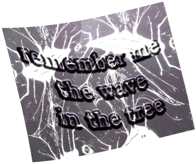

A World Community of Old Trees
Artist
Pierre de Kerangal
New York City, USA

© Pierre de Kerangal, 1996
Return to Josh's Interactive "Tree Chaos Series"
 Return to Main Page
Return to Main Page
Comments
Please send e-mail to: June Julian jj68@nyu.edu
A World Community of Old Trees
© 1996, 1997, 1998, 1999, 2000 June Julian
All rights reserved.